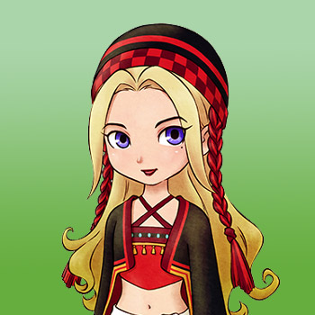

Jennifer es un nuevo personaje agregado a la versión para Nintendo Switch de Friends of Mineral Town. Solía vivir en una gran ciudad, pero decidió mudarse a un lugar menos agitado para estar más cerca de la naturaleza. Ha levantado una tienda de campaña en la costa de Mother's Lake para observar y absorber la energía del entorno que la rodea.
Si te casas con Jennifer, ella comenzará su día dentro de la casa de campo, pero luego recorrerá sus visitas a la tienda, a los comerciantes y al parque forestal, hasta regresar a tu casa de campo por la noche. En los días de lluvia o nieve, se quedará en casa todo el día.
| Cumpleaños | Invierno 2 (primario) o Invierno 18 (alternativo) |
|---|
| Amistad extra | (Ninguno) |
|---|
| Rival | (Ninguno) |
|---|
| Horario |
- Aunque puede tener una tienda de campaña, no vive en ella.
- La mayoría de los días de la semana, Jennifer pasa la noche en la posada y se dirige a su tienda alrededor de las 8:00 am.
- A primera hora de la tarde visitará a Lillia en la granja avícola (lunes), a Mugi en el rancho Yodel (martes) o al parque boscoso en el centro de la ciudad (miércoles a sábado).
- Luego a media tarde regresará a su tienda de campaña por unas horas hasta regresar a la posada alrededor de las 8:00 pm. Los domingos va directamente al bosque, luego a la playa alrededor de las 13:00 y luego regresa a la posada por la noche.
- En cualquier día lluvioso o nevado, Jennifer se quedará en la posada hasta las 10:00 a. m., luego pasará la mayor parte del día en la tienda y regresará a la posada a las 8:00 pm.
|
|---|
Preferencias de regalo
La mejor forma de mejorar la amistad y el afecto es siempre regalar las cosas que le gusta una vez por dia.
| Fasina |
|
| Encanta |
- Madalenas
- Galletas con chocolate
|
| Gusta |
- Lanas (C/T) (C/A)
- Todos los cultivos
- Huevo (C/T)
- Leche (T) (C/T)
- Todas las flores
- Hilos (C/T)
- Castaña
- Pan de pasas
- curry en polvo
- Harina de dango
- Harina de trigo
- Harina de trigo sarraceno
- Torta de fresa
- Soba con tempura
- Zarusoba
- Hongo pino
- Miel
- Golosina para mascotas
- Pelota para mascotas
- Arroz con bambú
- Palbochae
- Huevos benedictos
- Concentrado de frutas
- Puré De Patatas
- Arroz con hongo pino
- Filete a la pimienta
- Pulsera
- Broche
- Pendientes
- Ramen Picante
- Concentrado de frutas
- Potaje de calabaza
- Quiche
- Dorayaki
- Agua de uvas silvestres
- Hojas de té relajantes
- Pizza de verduras
- Pizza Margarita picante
- Maíz Asado
- Filete de pimienta picante
- Salteado de verduras picantes
- Collar
- Aceite
- Zumo de piña
- Sándwich Picante
|
| Desagrado |
- Lata vacía
- Queso (C/T)
- Rama
- Todos los minerales y gemas
- Fondue de queso
- Carta en botella
- Bota de goma
- Pescado pequeño
- Forraje
- Hongo Venenoso
- Paella
- Pasta a la carbonara
- Madera
- Sashimi
- Arroz con marisco
- Sopa de pescado
- Sushi
- Vestido
- Mascarilla
- Perfume
- Bloqueador solar
- Pescado a la plancha
- Loción para la piel
- Piedra
- Buñuelo de pescado
- Acqua pazza
- Pescado grande
- Pescado mediano
- Fósil Antiguo
- Torta de queso
- Roca
- Tesoro Pirata
- Alimento para pollos
- Risotto de queso
- Piedra Tomatosetta
- Tarta de queso esponjosa
- Madera Dorada
- Carpaccio
|
Eventos del corazón
Cada evento que ocurra el jugador tendra que escoger entre dos respuesta en la que uno ayuda a conseguir muchos puntos y la otra suele ser neutral o quitar puntos.
Cuando el candidato tenga corazón naranja puedes proponerle matrimonio con la pluma azul y despues de la boda tendra un corazón rojo.
Evento de introducción
| Corazón | Requisitos | Mejor espuesta |
|---|
 |
- Camine hacia el área de la mina del lago.
- No puede Domingo.
- 10:00 am a 12:00 pm
- Tiempo soleado
|
Opción 2: Sí, mis chakras están totalmente alineados. |
Evento del corazón Negro
| Corazón | Requisitos | Mejor respuesta |
|---|
 |
- Camine hacia el área de la mina del lago.
- No puede Domingo.
- 10:00 am a 12:00 pm
- Conoces a Basil.
- Tiempo soleado
- Has visto el evento de Introducción
- Jennifer tiene un color de corazón negro (5.000 LP) o superior.
|
Opción 2: Sí!, ¡Poder de la flor! |
Evento del Corazón Púrpura
| Corazón | Requisitos | Mejor respuesta |
|---|
 |
- Camine hacia el área de la mina del lago.
- No puede Domingo.
- 10:00 am a 12:00 pm
- Debe ser soleado
- Has visto el evento de corazón negro
- Jennifer tiene un color de corazón púrpura (10.000 LP) o superior.
|
Opción 1: Algo angelical. |
Evento del Corazón Azul
| Corazón | Requisitos | Mejor respuesta |
|---|
 |
- Entra en la tienda de la granja avícola.
- No puede Domingo.
- 11:10 am a 4:00 pm
- Cualquier clima
- Tener un espacio vacío para objetos en tu mochila.
- Has visto el evento de corazón púrpura
- Jennifer tiene un color de corazón azul (20.000 LP) o superior.
|
Opción 2: Vaya. Tienes un gran corazón. |
Evento del Corazón Amarillo
| Corazón | Requisitos | Mejor respuesta |
|---|
 |
- Entra en la tienda de Jennifer.
- Cualquier día de la semana.
- 10:00 am a 4:00 pm
- Debe ser soleado
- Has visto el evento de corazón azul
- Le has regalado a Jennifer una flor preservada.
- Jennifer tiene un color de corazón amarillo (40.000 LP) o superior.
|
Opción 2: La felicidad triunfa sobre la riqueza. |
Evento del Corazón Naranja
| Corazón | Requisitos | Mejor respuesta |
|---|
 |
- Sube al segundo piso de la posada.
- Cualquier día de la semana.
- 19:00 a 21:00
- Cualquier clima
- Has visto el evento de corazón amarillo
- Jennifer tiene un color de corazón naranja (50.000 LP) o superior.
|
Opción 2: Intentaré no preocuparte. |